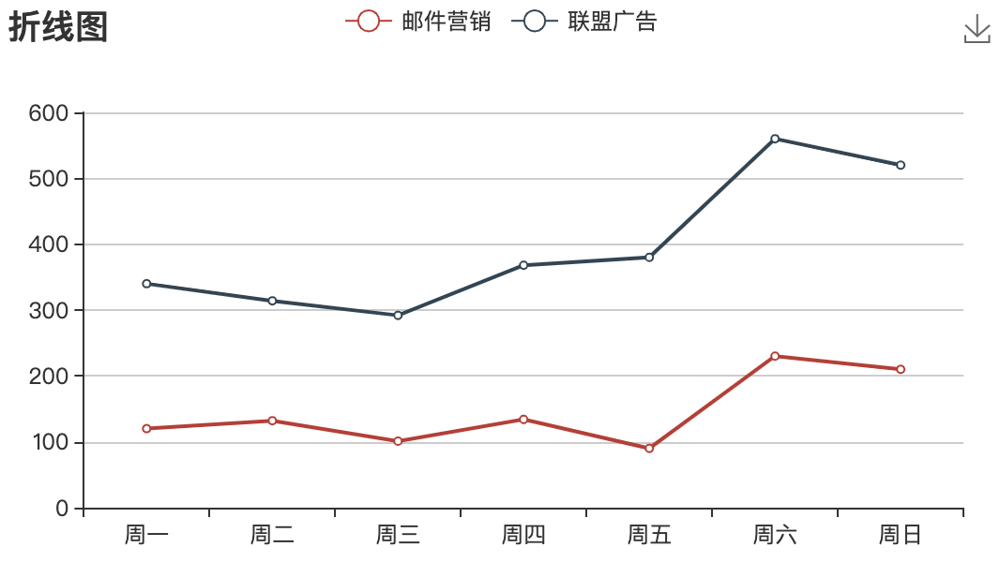
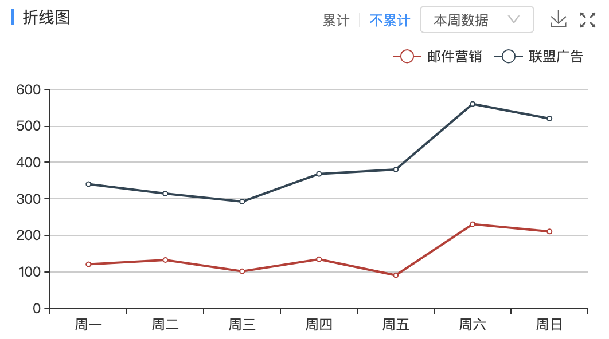
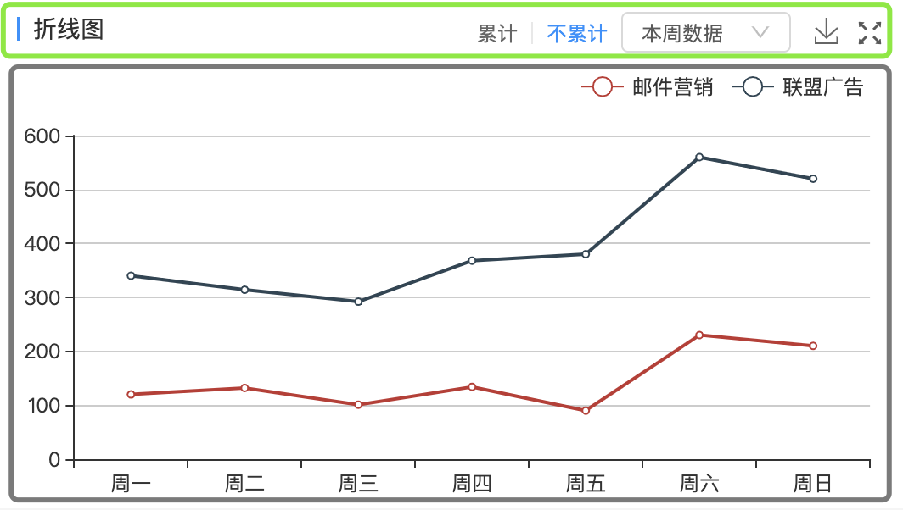

ECharts最终是返回一个canvas标签，其配置项是已经设定好的，而且部分配置是不支持传入自定义的元素的，所以想要画出丰富的图片，就需要舍弃某些配置，手动封装组件。下面介绍一下保存ECharts图片的两种方案。
看一下 ECharts 默认保存样式
ECharts 的配置 toolbox.feature.saveAsImage 显示出保存图片的Icon，如下图是ECharts的默认样式。

默认配置如下:
1 | option = { |
如果需求很简单，通过配置实现即可。但当需求中的标题样式较复杂或者还有其他其他操作需要和保存Icon并列时，就要放弃ECharts的默认样式，自己封装。如下图:

ECharts标题的配置不能实现标题左侧的蓝色色条，以及右上角的交互都不是ECharts支持的，需要自己实现。下面是我先后用到的两种方案:
自定义 ECharts 样式
标题、按钮、选择框、放大功能不做说明，主要说明保存图片的实现方式.
a标签实现保存图片
- 可拆分为上下两部分，互不影响。
 ECharts提供了getDataURL的API，获取绘制图像的地址。
1 | let href = myChart.getDataURL({ |
1 | <header> |
注: 执行getDataURL之前，ECharts的option必须设置好，否则图片出现空白
使用ECharts的配置实现保存图片
- 标题的元素设置绝对定位，并在放大
Icon前留空间给保存Icon canvas占据整个空间，图例和grid组件容器定位修改
1 | option = { |
1 | <header style={{position: absolute, ...}}> ... </header> |
注: 此方案保存的图片里是没有标题的
总结
两种方案各有利弊:
| 实现方式 | 利 | 弊 |
|---|---|---|
| 使用a标签 | 保存的图片属性较全 | 保存时可能会出现空白现象，必须在ECharts的option设置完成后才能执行getDataURL |
| 使用saveAsImage配置 | 保存时不会出现空白现象 | 保存的图片里没有标题 |